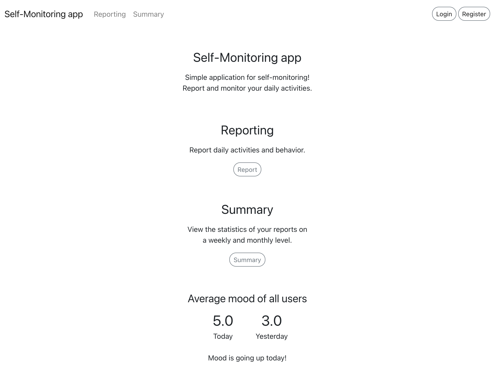
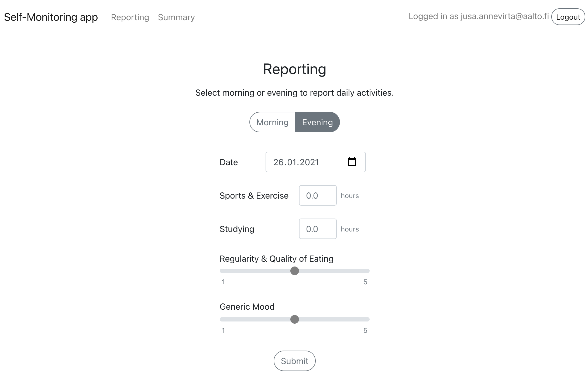

here are some things i've done
my portfolio
2021, solo
This is my portfolio. I have created it to gather information about me and my projects to one place.
The page is built with minimal set of languages. I wanted to stretch my abilities and develop my skills with no frameworks using only HTML, CSS, & a pinch of JQuery. Everything is designed and built from scratch by me.
I have designed the user interface to be modern and minimalistic (even brutalistic), yet informative.
source code
self-monitoring application
2020, solo
Self-monitoring web application for reporting daily behavior. The application provides functionality for summarization of reported data. Each user can view statistics of their own reports on a weekly and monthly level.
I created this application as a project for a Web software development -course.



stog15 water filtration system
2020, team
A foot operated water filter/purifier for hikers and backpackers in extreme conditions. Designed around small, powerfull, long-lasting and reusable ceramic filters
A product concept and prototype designed for a course on pruduct and industrial design with a multidisciplinary team consisting of four students.

craft beer from surplus bread
2019, team
This group project started on a university course called Creating Value with a goal of creating value to company/companies and customers with sustainability and circulation economy as the main theme of our team.
In collaboration with brewery Olarin panimo and grocery store K-Market Otaniemi we developed and crafted a beer made with surplus bread. The beer was in production in 2019 and was made available at dozens of Kesko stores.
This project attained a good amount of media attention and was reported by Helsingin Sanomat and Pirkka Magazine among other news and media. The project won the 'Deed of the Year' award at the Kesko merchant awards. Our "Leipäle" beer was also served at the Independence Day Reception held at the Presidential palace in 2019.

todo list with react
2020, solo
Simple Todo list web application with React. Utilizing react-sortable-hoc-library to make the list sortable.
An assignment for a course on basics of web bublishing.
ToDo list on codesandbox
music player ui prototypes
2019, solo
Music player UI tailored for jogging. Interaction design for a mobile setting using a web-based prototyping tool Marvel. Developed as an assignment for a course about human computer interaction.
A 3-level music selector that lets the user select an artist, an album, and a song to be player. Two alternative UI prototypes: three horizontally swipable screens & a single screen that presents the three levels using accordions.
UI prototypes on Marvel